World models predict the future frames of physical interaction.
They can generate training data, initialize policy models, and serve as simulators for embodied AI.
Predict future egocentric human manipulation videos with whole-hand touch
pressure finger flexion
They can generate training data, initialize policy models, and serve as simulators for embodied AI.
How much force the hand applies, and how it changes over time, decides how an interaction unfolds.
Whole-hand tactile gloves now record where and how firmly both hands press.
Can world models use dexterous touch to better predict the future?
We embed each hand's tactile reading and add it to the video tokens at that hand's location, through a zero-initialized residual in a pretrained video diffusion transformer.
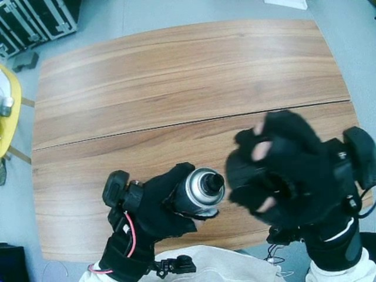
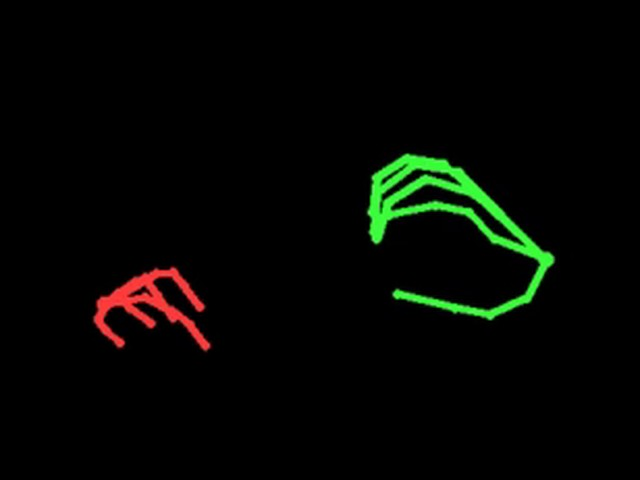
Task instruction
tactile residual added in 5 of the 30 blocks
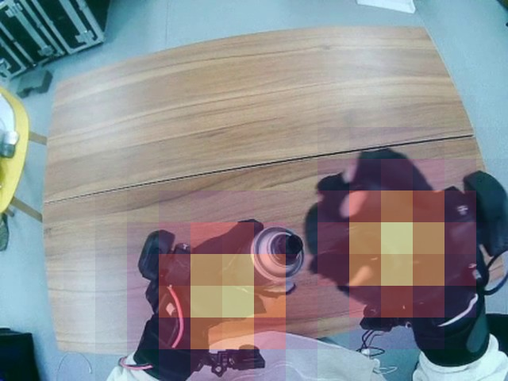
footprint g at the hand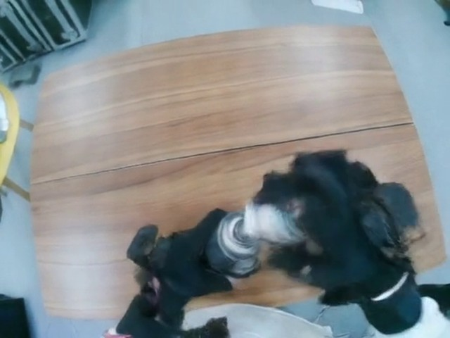
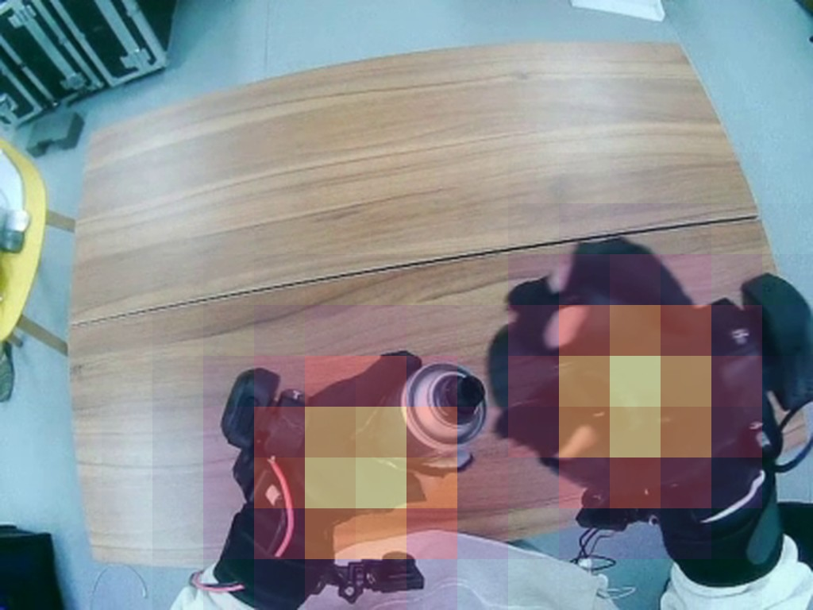
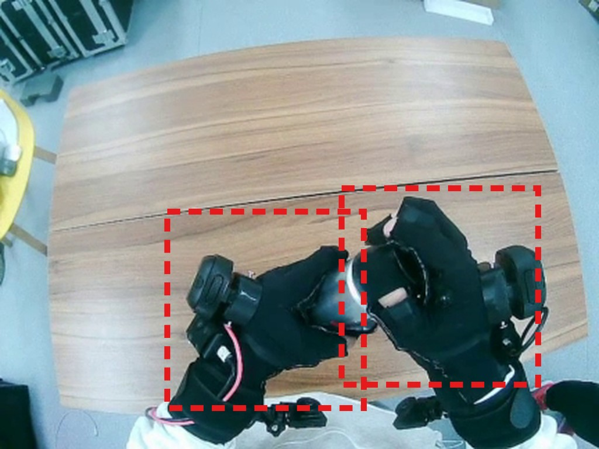
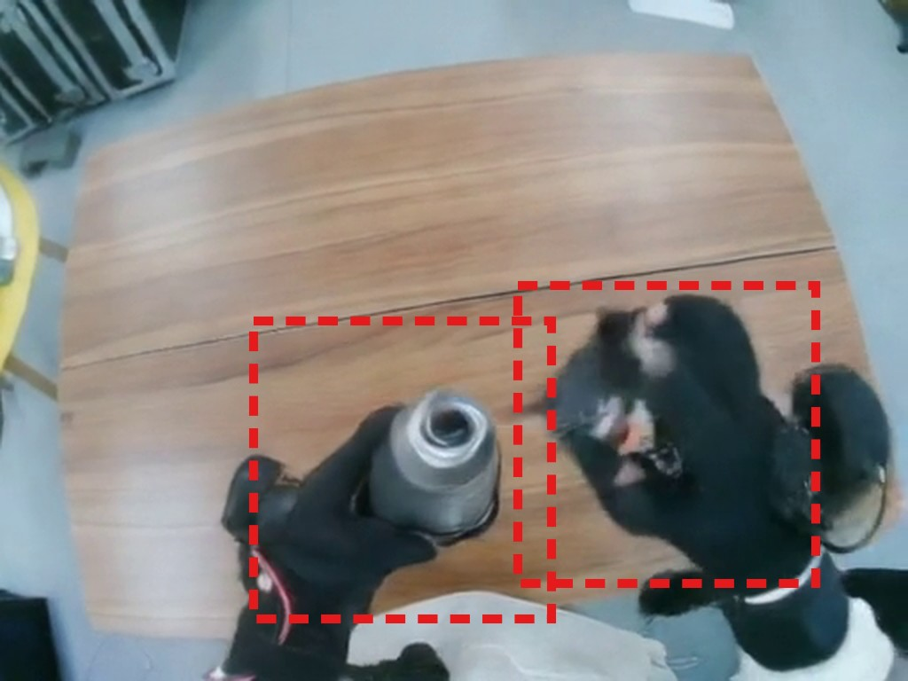
First predicted chunk, frames 13 to 28. Dashed boxes: ground-truth hand regions.
Touch history correlates with future manipulation. The observed frames look alike, but the observed touch evolves differently, and so do the manipulations that follow.
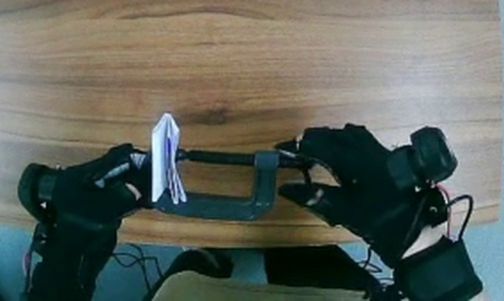
observed frame 12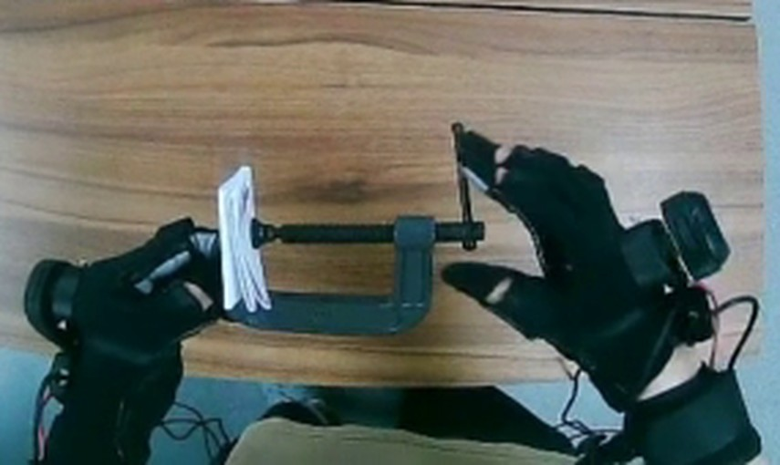
grasp holdsfuture frame 44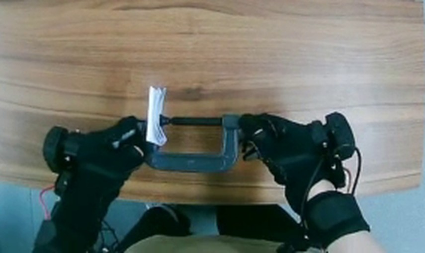
observed frame 12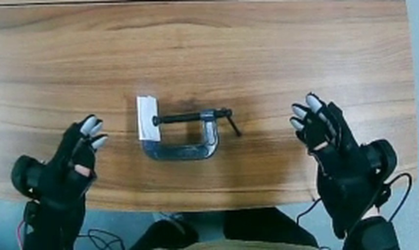
hands releasefuture frame 44A decaying touch leads to a release 2.5× as often (16%), a rising touch 1.8× as often (12%).
A rising force usually marks a short push, press or pinch in progress, which ends within a second and the hand lets go.
Training with touch teaches the model to tell visually similar frames with different contact states. Even without touch at inference, it applies this learned representation to estimate current contact, which also reduces its uncertainty. An uncertain model averages over possible futures and produces blur.
@article{zeng2026dtwm,
title = {Dexterous Tactile World Model},
author = {Zeng, Ziyao and Sun, Xiatao and Wang, Hao and Pan, Yueyang and Yu, Zhengxiang
and Yang, Fengyu and Liu, Tianyu and Fan, Zhiwen and Rakita, Daniel},
journal = {arXiv preprint},
year = {2026}
}